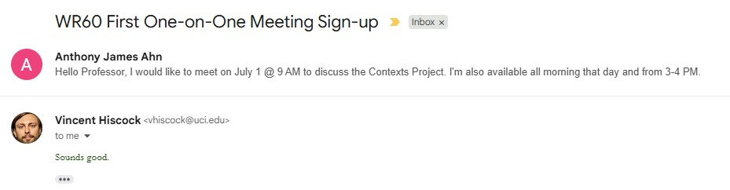
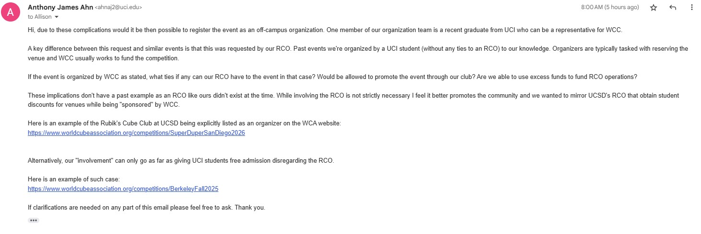
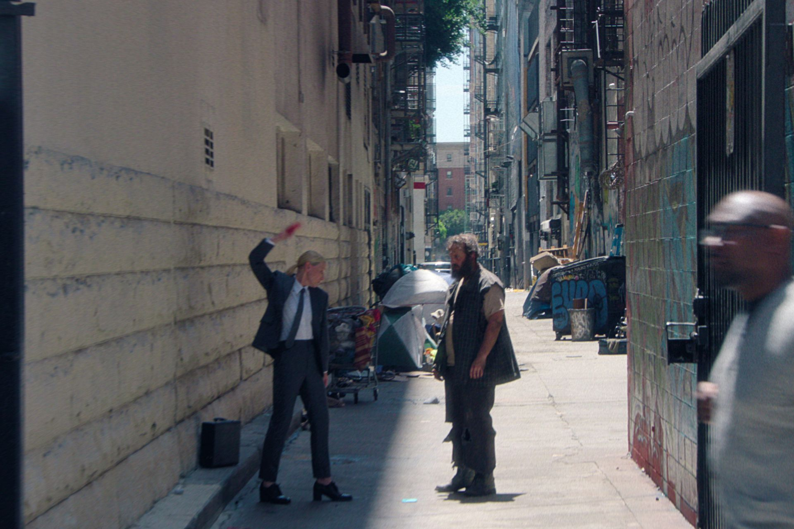
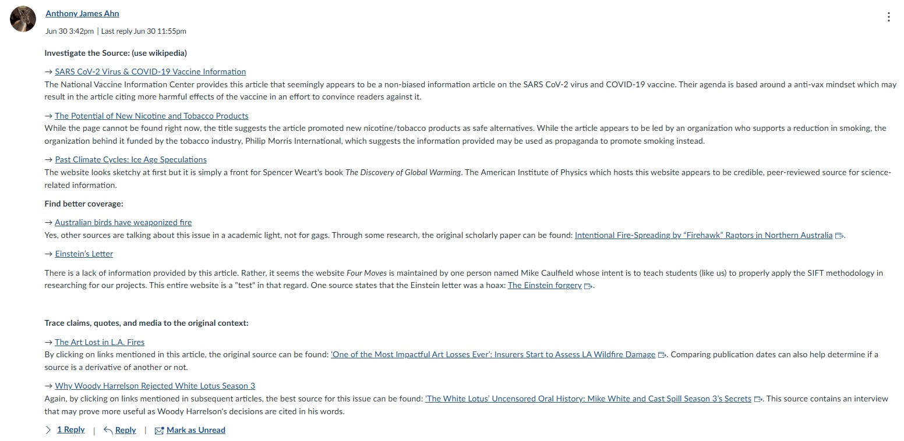
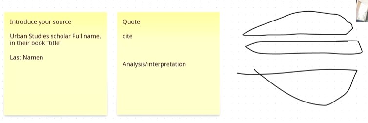

Hello!
Welcome aboard to my ePortfolio for WR60 with Professor Hiscock! This webpage let's you navigate through an archive of all my work,
gives insight into my writing process, and showcases my culmination projects for the course. The theme of our
course this Summer '25 was "Suburbia & its Discontents." It proved to be a familiar yet complex topic to explore
as students of UCI, located in the suburban city of Irvine.
Click the arrows to the left and right or use the navigation bar above to explore my ePortfolio!
Here's a short introduction video about me I recorded at UCI at the start of WR60!
And here's my final sharing about the class.
How Did I Get Here?
Many of my peers have long completed WR60 before I did this summer and I felt I was behind. I was worried that I wouldn't be able to keep up with a pace that I wasn't used to. Since WR50, I can't say I have done much writing but being more involved with the campus community has encouraged me to not be afraid in using words as a way to communicate with others. This summer in particular, I found myself drafting countless emails to UCI staff to organize events for my on-campus organization, catching up with friends through text, and talking on the line with technical support lines more often than I would be comfortable with. I brushed away writing as an irrelevant skill to my major in Computer Engineering. I got here thinking that being a native English speaker is enough. Yet, as I reflect back on these past 10 weeks, I realize that communication is a soft skill that I have to develop in order to see the future through. Writing is just one form of that.


Admitedly, I was a little anxious sending that first email. I haven't done so in a while and often even tried to avoid any form of communication in general. But this course gave me the confidence to just do it. I feel I can communicate my thoughts clearly with a quarter of the effort it once took.
Why Did I Write About Hollywood?
Truth be told, I chose to write about Hollywood just because I happened to had finished watching Squid Game at the time. The ending scene filmed in Los Angeles made me curious about why a studio chooses to film somewhere in the first place. I felt it was a unique angle I can explore that would encourage me to research more independently than if I was explicitly given a topic to write about.

How Did I Research?
WR60 taught me to not overcomplicate research. I think of a loose topic/frame, look for a good source, and then let it snowball from there. I feel I have
subconsciously done this throughout my academic life but in WR60 I was able to practice with engaging in my sources more actively.
One of my best sources proved to be On Hollywood: The Place, The Industry by Professor Allen J. Scott. It had an extensive bibliography that led me down a rabbithole
for finding other relevant sources with either database keywords, researching works by specific authors, or by title/link. As an older work, it showed me the complications with research
when it comes to finding credible, relevant information.
This is a tabular compilation of sources that we we're tasked with in WR60. I feel this method of keeping sources in line was a great method. It gave me freedom to just choose a source that looked interesting, paste it in here, and then look more thoroughly later. Many sources I found I didn't end up using but those I did felt more relevant to my specific angle.

A memorable class activity that we did was determining if a source was useful/credible to us. It taught me that a quick search about an author's name can help contextualize the piece I'm looking at. I was surprised how a seemingly credible source can be wraught with bias or misinformation. I feel that especially nowadays, it is important to develop this sense for credibility. Oftentimes, our gut feeling could tell us whether something is AI-generated, plagiarized, or blatantly fake. Researching peer reviewed journals gave us this foundation to do our research with some professionalism when called for it.
Taking a Leap of Faith
Good effort to get into some sources and to understand the issues. We need a clearer argument for the final. What are the main three or few things that have happened, in historical order, and what is the big point about their effect that you helps us understand the move of much capital and jobs out of SoCal and the current tightening or slowing of the relevant industries, respectively? Finally, what are the impacts for the workers most affected and for SoCal areas most affected? I think you'll need to do some more reading, more staring at your current sources, and maybe make a leap to tell us what you think, even if you're not certain, about the causes and impacts. Saying something is possibly or probably the case is just as strong as saying it's certainly the case, when we're trying to understand such complex stuff as scholars, but we very clearly want to make such claims as the outcome of our paragraphs.
The highlighted portion of Professor Hiscock's comment on my Contexts Project Draft 2 stuck with me throughout the rest of my writing for the course. I initially thought that everything must have a citation for it to be considered credible. In this specific context, I learned that as acadedmic scholars we shouldn't be afraid to speak our mind, especially if the topic we're discussing is ongoing. Many of my peers have repeatedly said that I should put analysis into my writing. I thought I was applying the "quote-sandwich" method adequately but this one comment flipped the switch for me to not be afraid to format a paragraph differently if it meant my thoughts came across more coherently. Building the sandwich helps structure your essay but you need to add some "condiments" to make the essay really stand out. I found that by the second draft I was able to organize my essay in a way that gave it that extra spice.

Embracing Multimodality
I was accustomed to incorporating multimodality from my highschool English classes (although rare). It was relatively easy for me transition to WR60 coming from WR50
where I incorporated frames from films in my papers. I expected the Contexts and Advocacy Projects to solely rely on text but reading the prompts assigned for each guided me
in a direction where I comfortably incorporated images. I tended to mostly use graphs in my analysis as I was stuck on having concrete evidence but I realize now that I could've
used a variety of other images to contextualize the ongoing issues inside Hollywood.
I would say that I tend to prefer visual communication over linguistic communication. That's why I felt it was natural for me to incorporate images directly into my first draft of the course.
Data spoke louder than words to me at the time and with the way I did my research a lot of my sources had relevant graphs for me to utilize.
Wrapping It All Up
I still have much more to say about my specific revision process associated with my major culmination projects. That part of my reflection is available
in the corresponding sections of my ePortfolio.
Overall, while WR60 proved to be a moderately challenging course it wasn't as bad as I made it out to be. I'm glad that I was able to research about Hollywood, a topic
I had genuine curiosity about and that I was rewarded for putting effort in my writing. I feel with this newfound confidence coming from WR60 I won't be afraid to write that email,
talk to someone on the phone, or learn by researching on my own.
Self Assessment
The following is my written self assessment from Week 1 of WR60.